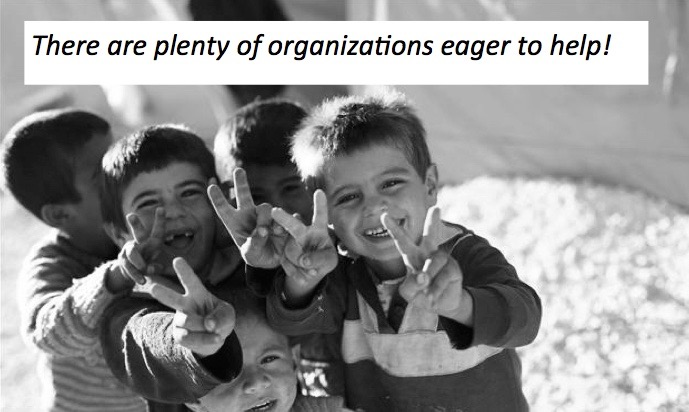

In 2015, about 2,340 refugees were welcomed into Minnesota.
Click me to learn more about this state's growing immigrant poulation from Minnesota Compass.
Minnesota offers a variety of resources accessible regardless of immigration status. The purpose of this website is to compile all charitable organizations within the Twin Cities that serve immigrant populations regardless of legal status.

The preferred geographic footprint for this work is the 7-country Metro area (which includes Hennepin, Ramsey, Anoka, Dakota, Carver, Scott and Washington Counties). Roughly three-quarters of refugees in Minnesota are settled in Hennepin and Ramsey counties.